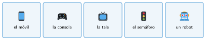
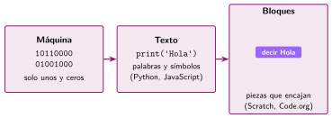

Qué es un programa
🤔 Pienso5 min
Qué hago aquí: Piensa un momento y contesta con lo que ya sabes. No pasa nada si no lo sabes: es para empezar.
Escribe tres aparatos de clase o de casa que hagan algo solos.
📖 Leo y aprendo15 min
Qué hago aquí: Lee despacio, mira los dibujos y los ejemplos, y quédate con la idea clave del final.
Las máquinas no piensan. Solo hacen lo que se les dice. Lo que se les dice está en un programa.
Hay programas en muchos aparatos:

La máquina no entiende nuestro idioma. Por eso usamos un lenguaje de programación. Hay tres tipos:

En este libro programamos con bloques. Cada bloque es una orden. Los bloques encajan como piezas de un puzle.
✏️ Hago25 min
Qué hago aquí: Haz las actividades en orden. Empieza siempre por las básicas.
Completa: un programa es una lista de en .
Une cada lenguaje con su tipo.
| Scratch • | • Máquina |
| Python • | • Bloques |
| 01100101 • | • Texto |
Escribe un aparato que tenga un programa y una cosa que hace solo.
¿Por qué crees que los lenguajes de bloques son buenos para aprender? Da una razón.
✏️ Puedes responder escribiendo, con un dibujo o un esquema, o contándolo en voz alta.
🚀 Amplío (si quieres saber más)
Qué hago aquí: ¿Has terminado? Lee la curiosidad o elige el reto. Es voluntario.
Un programa llamado traductor pasa los bloques a unos y ceros. ¿Por qué hace falta? Explícalo con un ejemplo de la vida real.
✅ Compruebo5 min
Qué hago aquí: Contesta sin mirar la ficha y marca cómo lo llevas.